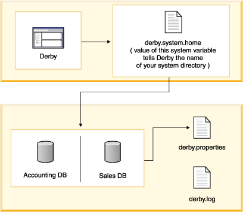

Derby System |
- Derby System
- One Derby per Java Virtual Machine
- Booting
- Shutting Down the System
- Defining the System Directory
- The Error Log
- derby.properties
- Double-Booting System Behavior
- Recommended Practices
Derby System
A Derby database exists within a system.
A Derby system is a single instance of the Derby database engine and the environment in which it runs. It consists of a system directory, zero or more databases, and a system-wide configuration. The system directory contains any persistent system-wide configuration parameters, or properties, specific to that system in a properties file called derby.properties. This file is not automatically created; you must create it yourself.
The Derby system is not persistent; you must specify the location of the system directory at every startup.
However, the system - as well as its directory, which you name - is an essential part of a running database or databases. Understanding the Derby system is essential to successful development and deployment of Derby applications.
Figure 1. Derby databases live in a system, which includes system-wide properties, an error log, and one or more databases.

The system directory can also contain an error log file called derby.log (see The Error Log).
Each database within that system is contained in a subdirectory, which has the same name as the database (see A Derby Database).
You can use a property (see "derby.service" in Tuning Derby) to include databases in other directories or in subdirectories of the system directory in the current system when you start it up.
In addition, if you connect to a database outside the current system, it automatically becomes part of the current system.
One Derby per Java Virtual Machine
You could potentially have two instances of a Derby system (JVM) running on the same machine at the same time. Each instance must run in a different JVM. Two separate instances of Derby must not access the same database. For example, in an embedded environment, an application that accesses Derby databases starts up the local JDBC driver, which starts up an instance of Derby. If you start another application, such as ij, and connect to the same database, severe database corruption can result. See Double-Booting System Behavior.
Booting
The default configuration for Derby is to boot (or start) a database when an application first makes a connection to it. When Derby boots a database, it checks to see if recovery needs to be run on the database, so in some unusual cases booting can take some time.
You can also configure your system to automatically boot all databases in the system when it starts up; see derby.system.bootAll in the Tuning Derby manual. Because of the time needed to boot a database, the number of databases in the system directory affects startup performance if you use that configuration.
Once a database has been booted within a Derby system, it remains active until the Derby system has been shut down or until you shut down the database individually.
When Derby boots a database, it prints a message in the error log:
2004-06-10 03:54:06.196 GMT: Booting Derby version - 10.0.0.1 alpha - (29612): instance c013800d-00fd-0cb0-e736-ffffd1025a25 on database directory sample
The number of databases running in a Derby system is limited only by the amount of memory available in the JVM.
Shutting Down the System
In an embedded environment, when an application shuts down, it should first shut down Derby.
If the application that started the embedded Derby quits but leaves the JVM running, Derby continues to run and is available for database connections.
In an embedded system, the application shuts down the Derby system by issuing the following JDBC call:
DriverManager.getConnection("jdbc:derby:cs;shutdown=true");
Shutdown commands always raise SQLExceptions.
When a Derby system shuts down, a message goes to the error log:
Sat Jan 10 14:31:54 PDT 2004: Shutting down instance 80000001-00d0-8bdf-d115-000a0a0b2d00
Typically, an application using an embedded Derby engine shuts down Derby just before shutting itself down. However, an application can shut down Derby and later restart it in the same JVM session. To restart Derby successfully, the JVM needs to unload org.apache.derby.jdbc.EmbeddedDriver, so that it can reload it when it restarts Derby. (Loading the local driver starts Derby.)
You cannot explicitly request that the JVM unload a class, but you can ensure that the EmbeddedDriver class is unloaded by using a System.gc() to force it to garbage collect classes that are no longer needed. Running with -nogc or -noclassgc definitely prevents the class from being unloaded and makes you unable to restart Derby in the same JVM.
It is also possible to shut down a single database instead of the entire Derby system. See Shutting Down Derby or an Individual Database. You can reboot a database in the same Derby session after shutting it down.
Defining the System Directory
You define the system directory when Derby starts up by specifying a Java system property called derby.system.home. If you do not specify the system directory when starting up Derby, the current directory becomes the system directory.
It is recommended that you always explicitly specify the system directory when starting up Derby.
Derby uses the derby.system.home property to determine which directory is its system directory - and thus what databases are in its system, where to create new databases, and what configuration parameters to use. See Tuning Derby for more information on setting this property.
If you specify a system directory at startup that does not exist, Derby creates this new directory - and thus a new system with no databases--automatically.
The Error Log
Once you create or connect to a database within a system, Derby begins outputting information and error messages, if any. Typically, Derby writes this information to a log called derby.log in the system directory, although you can also have Derby send messages to a stream, using a property. By default, Derby overwrites derby.log when you start the system. You can configure Derby to append to the log with the derby.infolog.append property. For information on setting this and other properties, see Tuning Derby.
derby.properties
The text file derby.properties contains the definition of properties, or configuration parameters valid for the entire system. This file is not automatically created; if you wish to set Derby properties with this file, you need to create it yourself. The file should be in the format created by the java.util.Properties.save method. For more information about properties and the derby.properties file, see Tuning Derby.
Double-Booting System Behavior
Derby attempts to prevent two instances of Derby from booting the same database by using a file called db.lck inside the database directory (see "The Database Directory").
On all platforms running with a JDK of 1.4 or higher, Derby can successfully prevent a second instance of Derby from booting the database and thus prevents corruption.
On some platforms running with a JDK lower than 1.4, Derby may prevent a second instance of Derby from booting the database (previous to JDK 1.4 the ability to do this was OS dependent).
If this is the case, you will see an SQLException like the following:
ERROR XJ040: Failed to start database 'sample', see the next exception for details. ERROR XSDB6: Another instance of Derby might have already booted the databaseC:\databases\sample.
The error is also written to the error log.
If you are running a JVM prior to 1.4, Derby issues a warning message on some platforms if an instance of Derby attempts to boot a database that already has a running instance of Derby attached to it. However, it does not prevent the second instance from booting, and thus potentially corrupting, the database. (You can change this behavior with the property derby.database.forceDatabaseLock.)
If a warning message has been issued, corruption might already have occurred. Corruption can occur even if one of the two booting systems has "readonly" access to the database.
The warning message looks like this:
WARNING: Derby (instance 80000000-00d2-3265-de92-000a0a0a0200) is attempting to boot the database /export/home/sky/wombat even though Derby (instance 80000000-00d2-3265-8abf-000a0a0a0200) might still be active. Only one instance of Derby should boot a database at a time. Severe and non-recoverable corruption can result and might have already occurred.
The warning is also written to the error log.
If you see this warning, you should close the connection and exit the JVM, minimizing the risk of a corruption. Close all instances of Derby, then restart one instance of Derby and shut down the database properly so that the db.lck file can be removed. The warning message continues to appear until a proper shutdown of the Derby system can delete the db.lck file.
When developing applications, you might want to configure Derby to append to the log. Doing so will help you detect when you have inadvertently started more than one instance of Derby in the same system. For example, when the derby.infolog.append property is set to true for a system, booting two instances of Derby in the same system produces the following in the log:
Sat Aug 14 09:42:51 PDT 2004: Booting Derby version - 10.0.0.1 alpha - (29612): instance 80000000-00d2-1c87-7586-000a0a0b1300 on database at directory C:\tutorial_system\sample ------------------------------------------------------------ Sat Aug 14 09:42:59 PDT 2004: Booting Derby version - 10.0.0.1 alpha - (29612): instance 80000000-00d2-1c87-9143-000a0a0b1300 on database at directory C:\tutorial_system\HelloWorldDB
Derby allows you to boot databases that are not in the system directory. While this might seem more convenient, check that you do not boot the same database with two JVMs. If you need to access a single database from more than one JVM, you will need to put a server solution in place. You can allow multiple JVMs that need to access that database to connect to the server. Derby includes the Network Server as a server solution. See the Derby Server and Administration Guide for more information on the Network Server.
Recommended Practices
When developing Derby applications, create a single directory to hold your database or databases. Give this directory a unique name, to help you remember that:
- All databases exist within a system.
- System-wide properties affect the entire system, and persistent system-wide properties live in the system directory.
- You can boot all the databases in the system, and the boot-up times of all databases affect the performance of the system.
- You can preboot databases only if they are within the system. (Databases do not necessarily have to live inside the system directory, but keeping your databases there is the recommended practice.)
- Once you connect to a database, it is part of the current system and thus inherits all system-wide properties.
- Only one instance of Derby can run in a JVM at a single time, and only one instance of Derby should boot a database at one time. Keeping databases in the system directory makes it less likely that you would use more than one instance of Derby.
- The error log is located inside the system directory.
Previous Page
Next Page
Table of Contents
Index
{kind=link}
{kind=link}
{kind=link}
{kind=link}
{kind=link}